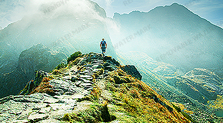

Weather Box..!!Weather for Week Ahead.....
 NOV 9,MondayMostly SunnyMany parts of the country will enjoy sunny spells which will feel pleasant in the sunshine, but there will be a risk of scattered showers in places.The south east of England will be largely dry and Scotland will be cloudier with showery rain, although most of the showers will die out by the time Friday evening arrives. |
NOV 9,TuesdayLight Rain ShowerMany parts of the country will enjoy sunny spells which will feel pleasant in the sunshine, but there will be a risk of scattered showers in places.The south east of England will be largely dry and Scotland will be cloudier with showery rain, although most of the showers will die out by the time Friday evening arrives. |
NOV 9,WednesdayClearMany parts of the country will enjoy sunny spells which will feel pleasant in the sunshine, but there will be a risk of scattered showers in places.The south east of England will be largely dry and Scotland will be cloudier with showery rain, although most of the showers will die out by the time Friday evening arrives. |
NOV 9,ThursdayPartly SunnyMany parts of the country will enjoy sunny spells which will feel pleasant in the sunshine, but there will be a risk of scattered showers in places.The south east of England will be largely dry and Scotland will be cloudier with showery rain, although most of the showers will die out by the time Friday evening arrives. |
 NOV 9,fridayMostly SunnyMany parts of the country will enjoy sunny spells which will feel pleasant in the sunshine, but there will be a risk of scattered showers in places.The south east of England will be largely dry and Scotland will be cloudier with showery rain, although most of the showers will die out by the time Friday evening arrives. |
NOV 9,SaturdayMostly SunnyMany parts of the country will enjoy sunny spells which will feel pleasant in the sunshine, but there will be a risk of scattered showers in places.The south east of England will be largely dry and Scotland will be cloudier with showery rain, although most of the showers will die out by the time Friday evening arrives. |